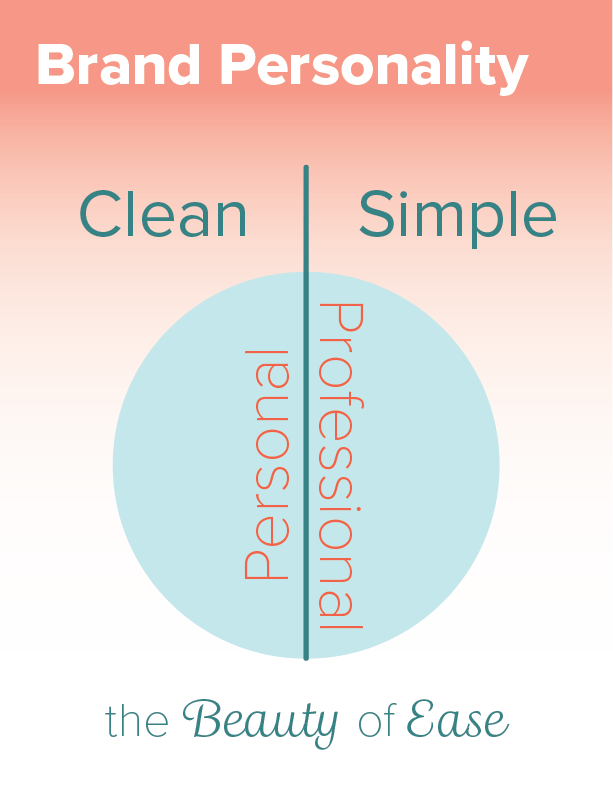
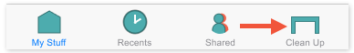

Project Specs
Duration 5 weeks
Design Roles UX Researcher, UX Designer, & Graphic Designer
Deliverables User Surveys, User Personas, Competitive Analysis, User Stories & Flows, Brand Personality & Messaging, Wireframes, User Testing, Custom Graphics, Brand Guidelines, Clickable Prototype
Tools Google Forms; Draw.io; Figma; Adobe Photoshop, Illustrator, and XD
The Problem
A company wants to get into the cloud storage industry - what do consumers already get from their cloud storage options, what users should they target, what do those users wish they had, how can you build it, and what type of brand should deliver it?
The Solution
DeskSpace is a customizable cloud storage and content creation service for consumers straddling too many cloud services. In addition to all the Google Drive and Dropbox features, DeskSpace allows users to reduce file bloat across multiple services to get more ‘desk space’ without forcing local downloads or having to temporarily pay for more space.
User Surveys
Current Usage
What cloud services are people currently using and why?
Features
How users prioritize features such as: Uploading, Creating content, Organizing, & Saving content online?
Money
What are users willing to pay for & what are they already paying?
Collaboration
Are/could users be motivated to share and collaborate with non-users?
Respondents
What are the demographics of potential users & their overall fluency with technology?
Devices
How users access these features (mobile vs web)
Most people have a Gmail account, so sharing and editing documents is easy.
- Respondent 11
There's not enough free storage.
- Respondent 25
Sometimes [I'm] not able to find things quickly since I have multiple accounts.
- Respondent 12
[my biggest complaint is] lack of space!
- Respondent 7
Dropbox is my favorite because it works like magic.
- Respondent 27
Surprise
I expected that people would be familiar with cloud storage, but I was surprised to learn how oversaturated respondents felt with the number of cloud services they use. Almost half of respondents were using or had used 3 or more storage apps, which came up time and again in the complaints.
Not A Surprise
People really like free space.
common complaints
44% of complaints
Always running out of free space
22% of complaints
Too many logins on too many services

22% of complaints
Sharing between services is often difficult
11% of complaints
I don't know who has permissions
Complaint Takeaways
- MUST give users as much free space as possible
- Give users an effective way to maximize free space
- Offer way(s) to alleviate login fatigue across services
- Minimize obstacles for sharing content with non-users
- Make permissions clear
- Make seeing current permissions easy
desired features
Takeaway: All of these features are important to users
computers vs. mobile
Takeaway: A desktop site is a MUST and the service should have a mobile site and/or app.
what respondents like about their current services
Takeaway: G-Drive is the dominant player in this space. Why? Because of its user-friendliness, programs, and large user base.
User Personas

Chris • On-the-go Professional • 32
“I have a stressful job and a lot of social commitments, so anything that helps me stay on top of it without having to think is amazing.”
See Chris' Persona
Jenna • Organized Planner • 28
“I hate how many different programs and logins I have to use to accomplish the same daily tasks. Things should be more efficient.”
See Jenna's PersonaCompetitive Analysis
G Drive

15 GB Free • Anything you want to store or create • Power of Google
Dropbox

2 GB Free • TEAM, TEAM, TEAM • Do work together, securely
Opportunities in the Market
The brand can target consumers using both apps (or more), and position the product as the “best of both worlds” by offering the same features AND letting users make the most of their free space by getting rid of superfluous files across multiple apps.
User Stories
 See User Stories
See User Stories
User Flows

Wireframes
While sketching, I went through multiple iterations of several pages such as the user dashboard here. It became clear the user dashboard didn’t need a nav menu, which led to the second image. However, in the last iteration I included buttons for common tasks that people have struggled with per user surveys and a couple of tasks that differentiate DeskSpace from its competitors like an “organize” button.

User Testing on Wireframes
Tested Tasks
- Sign Up for an account
- Create a file
- Organize a file -- i.e. move it to a new folder
Results
Users felt comfortable navigating most of the site, but as users narrated their experience, I observed there was confusion over the new features, especially regarding the organize/import button. Thus I updated the terminology to “clean up” and replaced one of the buttons with “sync," words used by the test users themselves.

Brand ID
Keeping in mind 'Jenna' & 'Chris' as well as stand-out quotes and relevant statistics from the user surveys, I landed on an overall brand concept.
The concept influenced everything from the choice of photography, to typography, to the shapes of buttons and cards.
name & logo creation
“Not enough free space…”
- Respondent 19
“…so many big files like photos & video...”
- Respondent 5
“…running out of space…”
- Respondent 27
In choosing a name for the product, I looked at the language of the users themselves. I was inspired by the idea of space being
such an ethereal - almost magical* - concept when it comes to ‘cloud computing’ and how not having enough of it or easy access to
it means not being able to get your tasks done.
* “Dropbox works like magic. I don’t know how it does what it does.” - User 17
Preference Testing (Round 1)
I showed some rough sketches of various logos and product name combinations to five respondents. The concept of ‘desk space’ with a recognizable desk, while my first idea, was actually preferred by all respondents.
Color Palette & Logo
I chose a beachy color palette to amplify the feeling of calm that users often lack in their busy lives.
Logo Rough Drafts
Final Logo
Font & Interactivity
Proxima Nova
Title 1 48/60
ExtraBold
Title 2 48/60
Regular
Title 3 32/40
Bold
Large 28/32
Regular
Regular 16/20
Regular
Madre Script
Emphasis 20/48
Italic
Source Sans Pro
Small 16/20
Regular
Micro 8/12
Bold
 Brand Guidelines
Brand Guidelines
Usability Tests
After bringing the wireframes to life in Figma and after fixing a few bugs within the various click behaviors of the prototype, I asked new users to narrate their experiences and perform the same three tasks as before, plus one a new one that involved the ‘new feature’: deleting duplicates. The users were able to perform all four tasks, this time with even less hesitation. They said the interface was easy to understand and reminded them of Google Drive.
Tested Tasks
- Sign Up for an account
- Create a file
- Organize a file -- i.e. move it to a new folder
- Find & Delete Duplicate Files
The improvements that I needed to make to the design were identified during the users’ narration phase of the usability tests. They were:
- While email integration is integral, this page diverged too much from the industry norm and tripped up users.
- It was unnecessary to place so much emphasis on small email services, when email integration would ultimately allow users to login via their email systems anyway.
- Having an extra click to log in with a non-Gmail, non-Outlook, or non-Facebook account was punishing those users unintentionally, so I replaced the ‘other’ button with the email & password input fields.

- Similarly to the login page, I realized that there just weren’t enough AOL & Yahoo users to warrant having two extra buttons for them.
- Instead, those users could use the “other” button.
- Facebook’s button was oddly placed and strange in proportion to the others, so I moved it.
- Since the idea of syncing files between cloud accounts is somewhat novel, users were having to guess what the sync button did.
- When I added a dropdown menu that showed the cloud accounts you could sync with DeskSpace, users were much more certain of what the intent of this feature was.
Preference Testing (Round 2)
Color of buttons on Getting Started page
Unanimous vote!: Users said the colored buttons were easier to distinguish as buttons.
Different mobile 'clean up' icons
Unanimous vote!: Users said the deskspace logo icon was more visually appealing than the simplified, empty desk icon.
Hover color on dropdown menus

Unanimous vote! (again!): Users said the blue hover color was more pleasing than the orange hover color.
Conclusion
It wasn’t surprising that users want as much free space as they can get and want files to upload and download as fast as possible; however, it was surprising that in trying to solve those issues on their own, users created new issues like having too many forgettable, disorganized accounts and getting confused on who had access to what.
At first, I considered free space and upload times purely technical issues. My breakthrough was realizing I could use design to alleviate the “free space” issue by helping users make the most of the space they have. Not only did it address the number one problem among users, but it also fit perfectly with the needs of our second user persona, Jenna, who wants her things organized.
[I realized] I could use design to alleviate the 'free space' issue by helping users make the most of the space they have.
If given more time, I would create more examples of what onboarding messaging should look like for first-time users so that during usability tests, I would hear more certainty from respondents about what the buttons like “clean up” and “sync” did. As it is, the users were able to correctly guess what the buttons did, and accomplished the other tested tasks easily, so the app is on the right track, and I look forward to seeing its successful evolution.